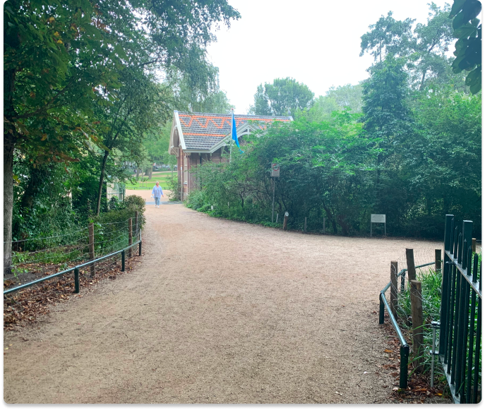
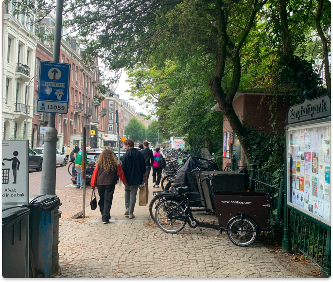
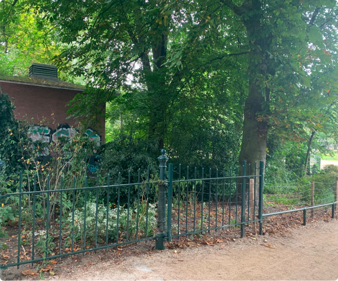
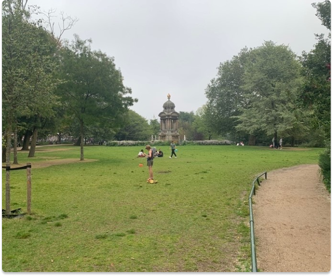

De Pijp Park
Explore the hidden Sarphatipark! Located right in the middle of the busy De Pijp district in Amsterdam, the Sarphatipark is a green oasis with a pond, fountain and enclosed playground. Sarphatipark is a peaceful park that invites both locals and visitors to take a break from the lively city.
-
What is there to do?
This small park is the perfect place to enjoy the sun, have a picnic with friends or just sit and people watch.
It also has a playground and a play forest. There is also a place for volleyball, basketball and table tennis.
There are lawns to sit on and a large pond. Swamp plants keep the water in the pond clean.
There are berry bushes and herbs in several places in the park. In the park is a monument to Samuel Sarphati, a Jewish doctor from the 19th century whose after the park is named.
He did a lot of good work for Amsterdam in the 19th century.
The Sarphatipark is lower than the neighborhood around it.
That is why there is a pumping station from 1884 that keeps the park dry.
  -  